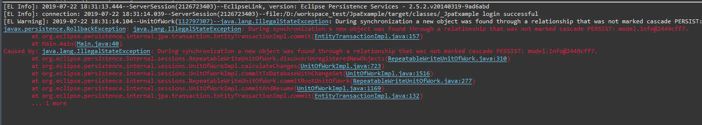

[Java] JPAでpersistance.xml設定とentityクラス設定(@GeneratedValue設定)
こんにちは。明月です。
このページでは「JPA」で「persistance.xml」設定と「entity」クラス設定(@GeneratedValue設定)に関して調べてみました。
前述で「JPA」の基本設定に関して説明しました。
link - [Java スタディ - 41] EclipseでJPAフレームワーク設定する方法
一応、Eclipseを利用してエンティティクラスを生成しましたが、しっかり生成されてないです。これがeclipseのバグか自動生成の限界かを知らないですが、Generatorで生成しても少し修正が必要です。
先、例データベースを作ってクラスを生成しましょう。
create table user(
id varchar(255) not null,
name nvarchar(255) not null,
primary key(id)
);
-- userテーブルと1:n
create table info(
idx int not null auto_increment,
id varchar(255) not null,
age int not null,
primary key(idx),
foreign key(id) references user(id)
);
-- infoテーブルと1:n
create table info2(
idx int not null auto_increment,
info_idx int not null,
birth date,
primary key(idx),
foreign key(info_idx) references info(idx)
);
-- userテーブルとm:n
create table permission(
code char(4) not null,
name varchar(255) not null,
primary key(code)
);
create table permission_map(
id varchar(255) not null,
code char(4) not null,
foreign key(id) references user(id),
foreign key(code) references permission(code)
);
上のテーブルで説明すると「user」テーブルのキーは「id」です。その派生テーブルで「info」テーブルがあるしその派生で「info2」テーブルがあります。
その派生テーブルは「1:n」のレファレンスです。
そして「permission」テーブルがあり「permission」マップを通って「m:n」のレファレンスになります。
上のテーブルをEclipseでクラスGeneratorをしましょう。


テーブルは確かに５つですが、クラスは４つになりますね。なぜなら「permission_map」の場合は「user」と「permission」を「m:n」のためのマップテーブルなのでクラスが必要ないと判断してクラスが生成されなかったんです。
先に「info」クタスと「info2」クラスを確認しましょう。
上のテーブルをみれば「idx」のアノテーションで「id」があります。この「id」のアノテーションはこのメンバー変数がキーですよという意味です。
このアノテーションは問題ないですが、オプションで「auto_increment」のオプションがないことが問題です。
「auto_increment」のオプションはテーブルにデータが「insert」する時に自動に採番してキーの値が増加することですね。
上のクエリでは確かに宣言しましたが、クラスのアノテーションでは設定されないですね。このまま、このクラスでデータを「insert」するとエラーが発生します。
public static void main(String... args) {
//FactoryManagerを生成する。"JpaExample"はpersistence.xmlで宣言した名だ。
EntityManagerFactory emf = Persistence.createEntityManagerFactory("JpaExample");
// Managerを生成する。
EntityManager em = emf.createEntityManager();
// transactionを持ち来る。
EntityTransaction transaction = em.getTransaction();
transaction.begin();
try {
// Userクラスを生成する。
User user = new User();
user.setId("nowonbun");
user.setName("명월");
user.setInfos(new LinkedList<>());
// Infoクラスを生成する。
Info info = new Info();
// Userクラスの派生として追加する。
user.addInfo(info);
info.setAge(20);
info.setInfo2s(new LinkedList<>());
// Info2クラスを生成する。
Info2 info2 = new Info2();
// Infoクラスの派生として追加する。
info.addInfo2(info2);
info2.setBirth(new Date());
// 予想結果は「user」テーブルと「info」テーブルと「info2」テーブルに「insert」する。
em.persist(user);
// transactionをコミットする。
transaction.commit();
} catch (Throwable e) {
if (transaction.isActive()) {
transaction.rollback();
}
e.printStackTrace();
}
}
上のソースで予想結果は「user」テーブルと「info」テーブルと「info2」テーブルに「insert」されることです。

エラーが発生しました。上のエラーは「auto_increment」のエラーではなく、「persist」連結に関するアノテーションがないというエラーです。
それなら「persist」を連結しましょう。
「User」テーブルと「info」テーブルに「cascade」オプションを入れました。「cascade」に関して少し後で説明します。
link - [Java スタディ - 43] JPAのEntity設定(cascade, fetch)
もう一回に実行しましょう。
上のエラーメッセージを見ると「id」が「null」になってエラーが発生したといいますね。「info」テーブルと「info2」テーブルの場合は採番増加なのでプログラムの中で「insert」ができないですが「null」というエラーが発生します。
これを解決するようには「id」アノテーションのオプションで「@GeneratedValue(strategy = GenerationType.IDENTITY)」を追加すればエラーなしで「insert」ができます。
予想とおりの結果が出ました。
- [Java] Java servletでインスタンスを初期する方法2019/10/17 07:15:48
- [Java] Spring web frameworkで発生する文字化けのEncoding設定2019/10/16 07:32:55
- [Java] Web Spring frameworkでfilter設定2019/10/15 20:12:35
- [Java] Web serviceのweb.xmlでエラーページ設定2019/10/14 20:13:44
- [Java] JPAのDAOをFactoryパターンで管理する方法2019/10/13 22:55:52
- [Java] JPAのSpring frameworkで依存性注入する方法2019/10/13 00:40:08
- [Java] JPAでDAOを生成する方法2019/10/11 07:30:14
- [Java] JPAでトランザクションの使用方法とオブサーバーパターンで共通トランザクション関数を作り方2019/10/10 07:29:43
- [Java] JPAのQuery を作り方2019/10/09 07:34:08
- [Java] JPAのEntityクラス設定(Cascade, fetch)2019/10/08 07:43:33
- [Java] JPAでpersistance.xml設定とentityクラス設定(@GeneratedValue設定)2019/10/07 07:38:13
- [Java] EclipseでJPAフレームワーク設定する方法2019/10/04 19:24:43
- [Java] Web spring frameworkのJSPで使う言語 JSTL - XML2019/10/03 20:02:06
- [Java] Web spring frameworkのJSPで使う言語 JSTL - 関数、データベース2019/10/02 21:00:22
- [Java] Web spring frameworkのJSPで使う言語 JSTL - コアー、フォーマッティング2019/10/01 21:48:08
- [Python] 07. globalとnonlocal2020/06/03 20:34:49
- [Python] 06. 関数(function) - インライン関数、callbak、ラムダ(lambda)そしてクロージャ2020/06/02 20:51:22
- [Python] 05. コンプリヘンション(Comprehension)を使用する方法2020/06/01 19:38:58
- [Python] 04. 制御文(if, while, for, break, continue)とインデント2020/05/29 21:09:08
- [Python] 03. Pythonでリスト(list)とタプル(tuple)、そしてディクショナリ(dictionary)、セット(set)2020/05/27 18:49:08
- [Python] 02. データタイプ、変数宣言そしてコメントする方法2020/05/26 18:16:52
- [Python] 01. Python3をインストールする方法(Anacondaインストール)2020/05/25 19:02:44
- [Java] HttpConnectionを利用してウェブページを取得する方法2020/05/20 23:53:24
- [Java] Jsoupを利用してXMLファイル(HTML)を扱う方法2020/05/19 19:32:21
- [C#] 非同期ソケット通信(IOCP)-APMパターン2020/05/18 18:45:37
- [C#] 非同期ソケット通信(IOCP)-EAPパターン2020/05/15 19:31:02
- [C#] ソケット(Socket)通信をする方法2020/05/13 17:37:13
- [C#] NPOIを利用してExcelを読み込んで出力する方法2020/05/08 10:43:52
- [C#] NPOIライブラリを利用してエクセルファイルを生成する方法2020/05/07 01:49:01
- [C#] Geckoライブラリを利用してウェブスクレイピングする方法2020/05/05 00:52:26